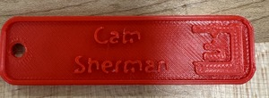
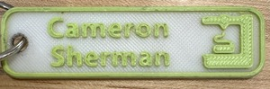
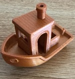

I am a junior at Brandeis University pursuing a double major in Computer Science
and Business. With a passion for coding, entrepreneurship, and leadership, I am driven to create
innovative solutions that bridge the worlds of technology and business. My professional interests
span software engineering, data science, management consulting, and finance, reflecting a deep
curiosity about how technology can transform industries and improve the investment experience. I am
actively involved in leadership roles and community initiatives, ranging from serving as class
chair, customer advocacy, and more. Through my academic pursuits and professional endeavors, I aim
to merge technical expertise with strategic business insight to drive impactful, positive change.
Experience
Information and Borrowing Assistant
Brandeis University Library
Deliver seamless library experiences by empowering patrons with efficient checkouts and
friendly service. Ensure proactive management of online resources, maintaining accuracy and
relevance in a rapidly evolving digital landscape. Optimize organization by streamlining
materials, fostering accessibility, and sustaining order. Utilize detailed record-keeping
systems to drive operational excellence and enhance the library's resource tracking
capabilities.
August 2024 - Present
Orientation Leader
Brandeis University Department of Orientation and First Year
Experience
Spearheaded impactful orientation initiatives, including move-in programs and campus tours,
to create a welcoming environment. Facilitated workshops, activities, and bonding events
that seamlessly integrated students into university life and culture. Leveraged adaptability
and swift decision-making to ensure a consistently positive orientation experience.
Collaborated with a diverse team of leaders to execute events that foster connection and
engagement.
August 2023 - January 2025
Lead Teaching Assistant: Software Entrepreneurship
Brandeis University Department of Computer Science
Developed and designed a course website to effectively showcase assignments and resources for
students. Guided student groups through classwork and the entrepreneurial process, fostering
engagement and understanding. Evaluated assignments with detailed feedback aligned with
course objectives. Collaborated with a team of teaching assistants to streamline
communication between students and the professor.
August 2024 - December 2024
Guest Advocate
Target Corporation
Provided outstanding service by engaging guests at registers, self-checkout, and service
areas to enhance their experience. Ensured exceptional quality through clear communication
and effective problem-solving to meet guest expectations. Maintained cleanliness and upheld
product safety standards while efficiently bagging items to align with company policies.
Apart from being a web developer, I enjoy most of my time being outdoors. In the winter, I am an avid
skier and novice ice climber. During the warmer months here in Colorado, I enjoy mountain biking,
free climbing, and kayaking.
When forced indoors, I follow a number of sci-fi and fantasy genre movies and television
shows, I am an aspiring chef, and I spend a large amount of my free time exploring the latest
technology advancements in the front-end web development world.
Engineering 11a Projects:
Design Project #1: Nametag & Torture Test

Second Nametag

First Nametag
On January 21, 2025, when I learned that the class would be about 3D printing, I was extremely
excited, as I already knew how to 3D print using Prusa Mini and PrusaSlicer via the MakerLab. Last
semester, I spent a lot of time in the MakerLab 3D printing random paraphernalia, and it was a lot
of fun. Since most of this class would be about discovering how to use the PrusaSlicer and 3D print
using the Prusa mini, I helped some of my classmates with both the software and hardware. When I was
able to get a printer to print my (second) nametag, I went a bit too fast, likely because of my
excitement and overconfidence in 3D printing that I got some filament stuck in the extruder tube.
Whoops. Thankfully, Ian was able to help release the filament. After that, I worked with a different
roll of PLA filament to print my second name tag (left), and after heating the nozzle & plate,
purging the previous roll’s filament, and loading the filament & USB with my 3mf file I would be
using, it came out as seen on the image on the left. In my opinion, it did not come out as complete
as my first nametag (the nametag on the right), mainly the text of my name, likely because I set the
text to be too small. I also did not change the color/filament of the top layer. Next time, I should
slow down and take a breath before I move forward with each step.
Design Project #2: Torture Test

Torture Test Boat
Following the debatably successful print of my second nametag that I definitely did not recycle at
the end of class, it was time to print out a 3D torture test. Thankfully we were allowed to take one
off of a 3D modeling website, so I grabbed a
classic toy boat torture test off Thingiverse, which is a relief because I do not know how
to model a torture test from scratch. I downloaded the .zip file which included a 3mf file as well
as an STL file (.3mf is a modern file format that can include information about materials, colors,
and textures, while .stl is an older format that only supports basic geometry). Once the .3mf file
was downloaded, I uploaded it to the PrusaSlicer and was about to add supports to it before getting
the gcode, but Ben & Ian told me that would take away the whole point of the torture test. Once I
got the GCode downloaded and on a USB drive, I uploaded it to the PrusaMini and the 3D printing
began. I was not able to watch the print because the class was just about over and I had to go to a
meeting at noon, but I was able to do some research on the toy boat torture test. Following my
research, I realized it is considered a "torture test" because it is designed with features like
overhangs, bridges, and acute angles, which challenge the PrusaMini and other 3d printer's
capabilities and reveal any potential weaknesses in its printing quality. Luckily, when I came back
from the meeting and picked up my print (as seen in the image above), it was a successful print!
Design Project #3: Working with Github/Web Development
After my first two 3d prints of the class. I was told I needed to publish them on a GitHub website.
As it turns out, I already know how to work with GitHub thanks to COSI 116a: Information
Visualization, so I was able to quickly set up a GitHub page so working with GitHub turned out to
not be a problem. I downloaded this template
and played around with it, mainly adding an introduction tab as well as an ENGR 11a tab, where I can
incorporate my homework submissions, which turned out to be pretty simple for me with my computer
science background. That is not to say there were zero problems, though, as I wanted to go above and
beyond and upload my work to a domain with my name. I made a major blunder and bought a domain name
on GoDaddy, which offers terrible domain management. It took me a while to transfer my GitHub page
to GoDaddy, and it was incredibly frustrating, but once I did, I got another error message! Upon
doing research as to why I got the message, I realized that I needed to purchase an SSL certificate.
Ugh! I caved in and bought a cheap one, and it STILL didn’t work, which left me really mad. I was so
mad, but still determined to get my domain name that a few days later, I made the switch to
NameCheap. It was a lot cheaper than GoDaddy, and it worked this time! Now, cameron-sherman.com is
finally live and I can feel satisfied.